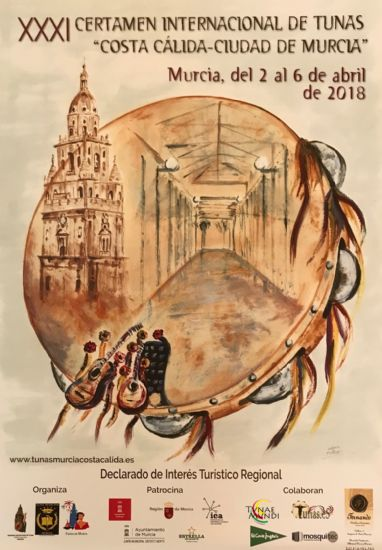

Antes de nada, dar nuestra más sincera enhorabuena a la Tuna Universitaria de Almería por el magnífico certamen que ha organizado.
El XV Certamen de Tunas “Ciudad de Almería” ha sido un fin de semana de muy buen rollo entre todas las tunas participantes y la organizadora, hemos compartido copas y canciones con la Tuna de Obras Públicas de Madrid, Tuna de Ciencias
de Granada, Tuna de Medicina de Salamanca y por supuesto con la Tuna Universitaria de Almería.
El viernes tuvo lugar el pasacalles por la Avenida de Almería, para seguidamente tener lugar las rondas en el balcón del edificio del Círculo Mercantil, donde al acabar el concurso de rondas hubo un acto de bienvenida por parte del Alcalde
de la Ciudad y del Rector de la Universidad.
El sábado por la tarde, una amplia representación de tunos, nos acercamos a la catedral de Almería para hacerle una ofrenda floral a la Virgen de la Esperanza.
Ya por la noche, en el Teatro Cervantes, comenzó el concurso de tunas, el cual cerró la tuna organizadora, para posteriormente pasar a la entrega de los premios.
Nos hicimos con el "Premio a la Mejor Tuna" y el "Premio al Mejor Pasacalles".
Esperamos volver pronto a Almería, donde siempre hemos disfrutado con su tuna y sus gentes, ya sea de certamen o por cualquier otro motivo.
PROGRAMA OFICIAL XXXI CERTAMEN INTERNACIONAL DE TUNAS COSTA CALIDA - CIUDAD DE MURCIA
Lunes 2 de abril de 2018
17:00 h - Ronda de la Tuna de Medicina de Murcia a la Reina de la Huerta y su corte de honor en El Corte Inglés de Avda. de la Libertad.
18:30 h – Actuación de la Tuna de Medicina de Murcia ante la virgen de la Fuensanta en la Plaza del Cardenal Belluga
22.00 h - Gran gala inaugural del XXXII Certamen Internacional de Tunas "Costa Cálida – Ciudad de Murcia" en el Teatro Romea de Murcia, presentada por Juan Manuel Piñero.
Investidura del "Gran Maestre" del Certamen al grupo "Los Parrandboleros"
Presentación como "Madrina" del Certamen de Dña Ana Guerra, finalista de O.T 2017
Actuación de la Tuna de la Facultad de Medicina de la Universidad de Murcia
Miércoles 4 de abril de 2018
21:30 h – Actuaciones de Tunas en la Pérgola de San Basilio:
Fuera de concurso:
Tuna de la Asociación de discapacitados Nuevo Horizonte
Tunas de la Facultad de Derecho de Murcia
Tuna de Ciencias Económicas y Empresariales de Murcia
Tuna de Magisterio de Murcia
Tuna de Distrito de Murcia
En concurso:
Tuna Femenina de la Universidad de los Ande. Bogotá (Colombia)
Tuna Universitaria de San Marcos. Lima (Perú)
Jueves 5 de abril de 2018
17:30 h – Desfile de las flores con la participación de la Tuna de la Facultad de Medicina de la Universidad de Murcia.
Visita al certamen de la Reina de la Huerta y sus damas de honor.
21:30 h – Actuaciones de Tunas a concurso en la Pérgola de San Basilio:
Tuna de Derecho de la Universidad de Santiago de Compostela
Tuna Universitaria de Ciencias de Valencia
Tuna Universitaria de Lisboa (Portugal)
Tuna Universitaria de Distrito de Las Palmas de Gran Canarias
Tuna Universitaria de Distrito de Granada
Tuna Universitaria de Alcalá de Henares
Viernes 6 de abril de 2018
18:00 h - Recepción del Excelentísimo Ayuntamiento de Murcia a las Tunas participantes, en el salón de Plenos del Ayuntamiento de Murcia.
19:00 h – Ronda de las tunas participantes bajo el balcón del Ayuntamiento de Murcia, en la Glorieta de España.
21:30 h – Gala de clausura del XXXI Certamen Internacional de Tunas "Costa Cálida – Ciudad de Murcia" en La Pérgola de San Basilio:
Entrega de premios
Actuación de la Tuna ganadora
Actuación de la Tuna de la Facultad de Medicina de la Universidad de Murcia
Actuación del Grupo "Mercey Romántico"
Organizan: Asociación Cultural Certamen Internacional de Tunas “Costa Cálida – Ciudad de Murcia” y Tuna de la Facultad de Medicina de la Universidad de Murcia
Patrocinan: Ayuntamiento de Murcia, ICA, Estrella de Levante.
Colaboran: Tunas.es, El Corte Inglés, Tvnae Mvndi, Mosquitec.
*La organización se reserva el derecho de alterar o modificar parcial o totalmente la programación.*

Cartel CCC 2018
ACTUACION DE LA TUNA DE LA FACULTAD DE MEDICINA DE LA UNIVERSIDAD DE MURCIA EN NERPIO (ALBACETE)
La Tuna de la Facultad de Medicina de la Universidad de Murcia, actuó anoche en el complejo rural Las Nogueras de Nerpio (Albacete).
En un entorno natural privilegiado, la Tuna de la Facultad de Medicina de la Universidad de Murcia, amenizó una fiesta de cumpleaños que estuvo organizada por Nacho Morales de "El Gato y La Luna Producciones".
Fue hora y media de actuación donde los invitados al cumpleaños disfrutaron de un amplio repertorio de canciones de tuna como "Clavelitos", "La Morena de mi Copla" y otras tan populares como "Guantanamera", "El Mundo" o "Y Viva España",
teniendo que hacer 2 bises al grito de "otra, otra, otra".
Noche triunfal en este maravilloso pueblo manchego.